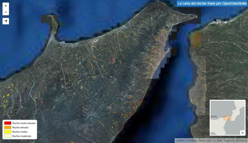

Preso dalle tante sollecitazioni arrivate dall’emergenza maltempo a Genova, Parma e Alessandria, ho pensato di iniziare a raccogliere dati e informazioni legate al Rischio idrogeologico in terra di Sicilia.
Ho constatato una barriera di accesso alle informazioni sui siti ufficiali della Pubblica Amministrazione, e anche le notizie reperibili attraverso articoli giornalistici, non riescono a dare una risposta chiara ad una domanda semplice: sono in pericolo?
Fornire gli strumenti per dare una risposta, significa fare una buona informazione civica, un obiettivo alto e stimolante per chi gestisce la cosa pubblica, ma che alle volte non è nemmeno abbozzato.
Per valutare il mio rischio devo rispondere almeno ad altre due domande:
- vivo vicino ad un rischio naturale?
- se sì, quanto è elevato?
I contenuti utili a definire la cosa sono disponibili, ma non permettono di passare dalla propria e personale conoscenza del territorio alla sua rappresentazione istituzionale.
Ho concentrato la mia ricerca sul rischio idrogeologico e sono “caduto” in questo articolo del Giornale di Sicilia: nella mia regione ci sarebbero 22 mila aree a rischio.
Il progetto di riferimento è il PAI (Piano di Assetto Idrogeologico), “lo strumento conoscitivo, normativo e tecnico-operativo mediante il quale sono pianificate e programmate le azioni, gli interventi e le norme d’uso riguardanti la difesa dal rischio idrogeologico del territorio siciliano“.
Il sito web ufficiale è http://www.sitr.regione.sicilia.it/pai/, tenuto aggiornato nel tempo e ricco di pagine contenenti numerosi allegati (essenzialmente file PDF, compressi in file .zip). Mi aiuta a rispondere alle questioni poste sopra?
Non credo, salvo non conoscere ad esempio i nomi dei bacini idrografici locali, cosa ignota al 99 % delle persone che frequento. Ma anche sapendo il nome del bacino – ad esempio “Torrente Saponara, Area Territoriale tra i bacini T.te Saponara e F.ra Niceto” – ci si trova davanti a barriere di comunicazione come quella dell’immagine di sotto.

Qual è il significato del nome di questi file? Ne apro qualcuno, guardo un po’ dentro e cerco di capire? Non credo possa essere così, e sicuramente non può essere solo così.
Dati come questi devono essere pubblicati anche in maniera immediatamente comprensibile e leggibile da tutti: me, mia mamma, un giornalista, un pittore, un tecnico comunale, mio nipote il grande, il vicino di casa e financo da Gerlando.
Solo come esempio, per quell’insieme di persone che ha accesso al web, una semplice mappa come questa dà un’informazione che è subito comprensibile ad una platea vasta: dovo sono le aree a rischio frana in Sicilia, e qual è il grado di rischio.

Non scrivo tutto questo per fare una critica al PAI, è un progetto che non conosco e che immagino essere di qualità.
La barriera non è la presenza/assenza delle informazioni ma il loro scarso grado di utilizzabilità civica. Sarebbe auspicabile una collaborazione con la cittadinanza per trovare le modalità per superarla. Il risultato può essere proprio una mappa facilmente comprensibile da tutti.
Si tratta di un problema molto più semplice di quello del rischio idrogeologico, cionondimeno affrontarlo e risolverlo sarebbe una scelta politica con benefici a catena per tutti.
Invito la Regione Siciliana a costruire sul tema del rischio idrogeologico (e sul rischio in generale) una strategia di comunicazione e di informazione civica di qualità, senza barriere e ad ampio spettro.
Ad aprire di più e meglio i dati relativi, in modo che possano essere realizzate analisi e rappresentazioni del tema che oggi nemmeno immaginiamo. La carta interattiva di sopra, è stata implementata grazie a 2 servizi aperti: quello messo a disposizione dal Geoportale Regione Siciliana (special thanks ad Agostino) e l’ortofoto RealVista.
Una delle conseguenze dell’apertura dei dati è proprio quella di creare le precondizioni per raccontare meglio il proprio il territorio, in ciò per cui brilla e in ciò per cui è a rischio.
E io di queste storie vorrei poterne leggere tante.
NdR: questo articolo è pubblicato anche sul blog di Open Data Sicilia.


{kind=link}